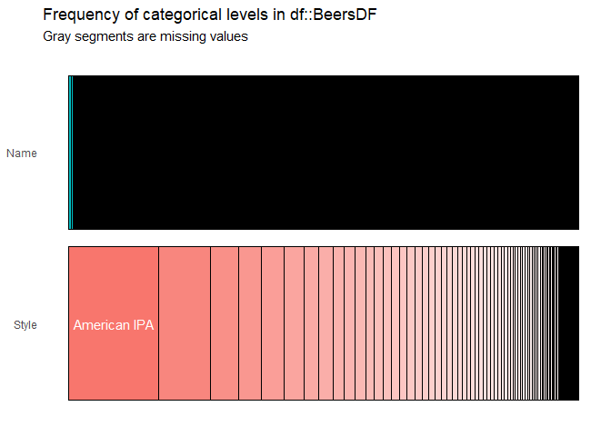
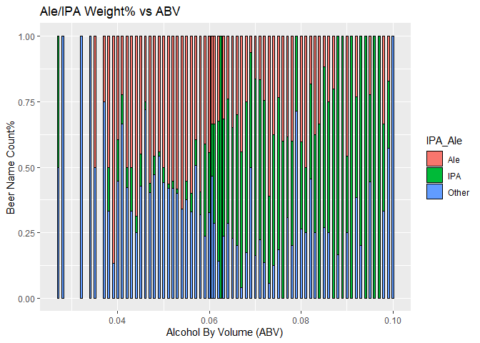
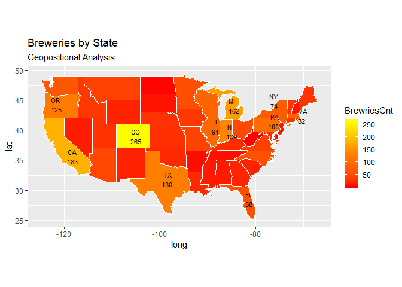

Introduction
In this case study, we analyzed two data sets provided by our client Budweiser, the Beers dataset contains a list of 2410 US craft beers and Breweries dataset contains 558 US breweries. The purpose of the code is to find statistical characters of IBU and ABV data, also the correlation between them to address questions from Budweriser.
Repository Structure
Case study Repository in GitHub: https://github.com/48120778/EDAforProject1.git
Case study RShiny App: https://data-science-hw.shinyapps.io/BeerShiny/
Files:
Reers.csv: Source beer data.
Breweries.csv: Source breweries data.
EDAforProject1_R5.RMD: R Markdown file with all R code.
EDAforProject1_R5.HTML: HTML file created with Knit.
Initial data profiling on Beers data set

Initial data profiling on Breweries data set
## 'data.frame': 558 obs. of 4 variables:
## $ Brew_ID: int 1 2 3 4 5 6 7 8 9 10 ...
## $ Name : Factor w/ 551 levels "10 Barrel Brewing Company",..: 355 12 266 319 201 136 227 477 59 491 ...
## $ City : Factor w/ 384 levels "Abingdon","Abita Springs",..: 228 200 122 299 300 62 91 48 152 136 ...
## $ State : Factor w/ 51 levels " AK"," AL"," AR",..: 24 18 20 5 5 41 6 23 23 23 ...Analysis
1. How many breweries are present in each state?
Number of breweries in 51 states has been calculated and provided as the below table, together with a plot with numbers in order.
##
## AK AL AR AZ CA CO CT DC DE FL GA HI IA ID IL IN KS KY
## 7 3 2 11 39 47 8 1 2 15 7 4 5 5 18 22 3 4
## LA MA MD ME MI MN MO MS MT NC ND NE NH NJ NM NV NY OH
## 5 23 7 9 32 12 9 2 9 19 1 5 3 3 4 2 16 15
## OK OR PA RI SC SD TN TX UT VA VT WA WI WV WY
## 6 29 25 5 4 1 3 28 4 16 10 23 20 1 42. Merge beer data with the breweries data. Print the first 6 observations and the last six observations to check the merged file.
We merged the two data set into one and named it as ‘mergeDF’, the primary key being used is ‘Brewery_id’ from Beer data set, and ‘Brew_ID’ from Breweries data set. We also changed the two columns’ name for clear understanding. The first and last 6 observations were showed there with head/tail command.
The first 6 observations of the merged file:
## Brewery_id Beer_name Beer_ID ABV IBU
## 1 1 Get Together 2692 0.045 50
## 2 1 Maggie's Leap 2691 0.049 26
## 3 1 Wall's End 2690 0.048 19
## 4 1 Pumpion 2689 0.060 38
## 5 1 Stronghold 2688 0.060 25
## 6 1 Parapet ESB 2687 0.056 47
## Style Ounces Brewery_name
## 1 American IPA 16 NorthGate Brewing
## 2 Milk / Sweet Stout 16 NorthGate Brewing
## 3 English Brown Ale 16 NorthGate Brewing
## 4 Pumpkin Ale 16 NorthGate Brewing
## 5 American Porter 16 NorthGate Brewing
## 6 Extra Special / Strong Bitter (ESB) 16 NorthGate Brewing
## City State
## 1 Minneapolis MN
## 2 Minneapolis MN
## 3 Minneapolis MN
## 4 Minneapolis MN
## 5 Minneapolis MN
## 6 Minneapolis MNThe last 6 observations of the merged file:
## Brewery_id Beer_name Beer_ID ABV IBU
## 2405 556 Pilsner Ukiah 98 0.055 NA
## 2406 557 Heinnieweisse Weissebier 52 0.049 NA
## 2407 557 Snapperhead IPA 51 0.068 NA
## 2408 557 Moo Thunder Stout 50 0.049 NA
## 2409 557 Porkslap Pale Ale 49 0.043 NA
## 2410 558 Urban Wilderness Pale Ale 30 0.049 NA
## Style Ounces Brewery_name
## 2405 German Pilsener 12 Ukiah Brewing Company
## 2406 Hefeweizen 12 Butternuts Beer and Ale
## 2407 American IPA 12 Butternuts Beer and Ale
## 2408 Milk / Sweet Stout 12 Butternuts Beer and Ale
## 2409 American Pale Ale (APA) 12 Butternuts Beer and Ale
## 2410 English Pale Ale 12 Sleeping Lady Brewing Company
## City State
## 2405 Ukiah CA
## 2406 Garrattsville NY
## 2407 Garrattsville NY
## 2408 Garrattsville NY
## 2409 Garrattsville NY
## 2410 Anchorage AK3. Address the missing values in each column.
There are 62 observations where both ABV and IBU are NA’s, 943 observations where the IBU only are NA’s. We replaced 62 NA’s in ABV with state level median. Replacing 1005 NA’s in IBU with state level median led to an 18% reduction in the accuracy of the correlation model. Predicted values from simple linear regression model are used to replace missing values in IBU to improve the accuracy of the model.

4. Compute the median alcohol content(ABV) and international bitterness unit (IBU) for each state. Plot a bar chart to compare.
Median ABV and IBU data have been sorted and plotted.
The median ABV per state appears fairly consistent with an overall ABV median of 0.056.
Kentucky has the highest median ABV at 0.062 and Utah has the lowest at 0.04.
The median IBU per state appears to change considerably between states with an overall IBU median of 37.
West Virginia has the highest median IBU at 57.5 and Kansas has the lowest at 22.
5. Which state has the maximum alcoholic (ABV) beer? Which state has the most bitter (IBU) beer?
Maximum ABV and IBU data have been sorted and plotted. The maximum ABV per state appears to vary between states with an overall median of all max values at 0.09. Colorado has the highest Max ABV at 0.128 and Delaware has the lowest at 0.055. The maximum IBU per state appears to vary between states with an overall median of all max values at 92.82. Oregon has the highest Max IBU at 138 and Arkansas has the lowest at 44.11
Summary
Through this case study, we dealt with the missing values by replacing with median values in ABV, and by predicted values from a simple linear regression model. We performed the statistical analysis on ABV and IBU values, and found the linear correlation between the IBU and ABV. We built a KNN classification model and find the best k value through 50 iterations, with this model we can predict the IPA or Ale beers in 79% accuacy. Finally we run a reach out analysis with external alcohol abuse data set, and found the correlation between the breweries count and alcohol abuse count. Recommendations have been provided to Budweiser.
6. Comment on the summary statistics and distribution of the ABV variable.
The ABV clearly illustrates that the IPA variety has more Alcohol By Volume than other varieties. This is across all can sizes with one exception (can size=19.2) in the “other” type. The ABV per size of can (oz) clearly illustrates that the IPA variety has more Alcohol By Volume than other varieties. This across all can sizes with one exception (can size=19.2).
IPA style beer is the predominant variety when ABV exceeds 0.06. This again indicates that IPA beer tends to have higher alcohol content than other variety.

7. Is there an apparent relationship between the bitterness of the beer and its alcoholic content? Draw a scatter plot. Make your best judgment of a relationship and EXPLAIN your answer.
The point plot below illustrates what appears to a positive linear relationship between the ABB and IBU. The addition of line trend to the point plot below confirms the presence of a positive linear relationship between the ABV and IBU.
The correlation between IBU and ABV is 0.757878, with a p-value < 2e-16, Multiple R-squared is 0.5744, meaning that 57% changes in exploratory variable ABV can explain the changes in response variable IBU.
GGPairs Plot below shows a strong correlation between ABV and IBU across all styles of beers. The strongest correlation is in other beer style category at 0.787 followed by IPA at 0.689.
8. Budweiser would also like to investigate the difference with respect to IBU and ABV between IPAs (India Pale Ales) and other types of Ale (any beer with “Ale” in its name other than IPA). You decide to use KNN clustering to investigate this relationship. Provide statistical evidence one way or the other. You can of course assume your audience is comfortable with percentages … KNN is very easy to understand.
A category variable IPA_Ale is created to split all the 2410 beers into three groups: Ale (1007), IPA (571) and Other (832), we only use the first two groups for analysis in this part. A KNN classification model with a 75% split and 50 iteration results in an 80% classification accuracy as shown in the confusion matrix. This was achieve by trying 30 different K values resulting in K=5 as the optimal value as shown.
9. Knock their socks off! Find one other useful inference from the data that you feel Budweiser may be able to find value in. You must convince them why it is important and back up your conviction with appropriate statistical evidence.
Based on visual Geo-positional analysis of Breweries presence by state (count) and Alcohol abuse by State (source: US Dept. of Health & Human Services) there appears to be a correlation. The correlation analysis reveals the presence of positive linear relationship between the alcohol abuse and the count of the breweries. Based on this, Budweiser may want to establish an out reach program to educate people about the dangers of alcohol abuse especially in state where Budweiser had significant presence.

Correlation between breweries count and alcohol abuse cases: